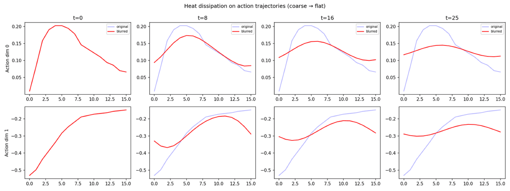
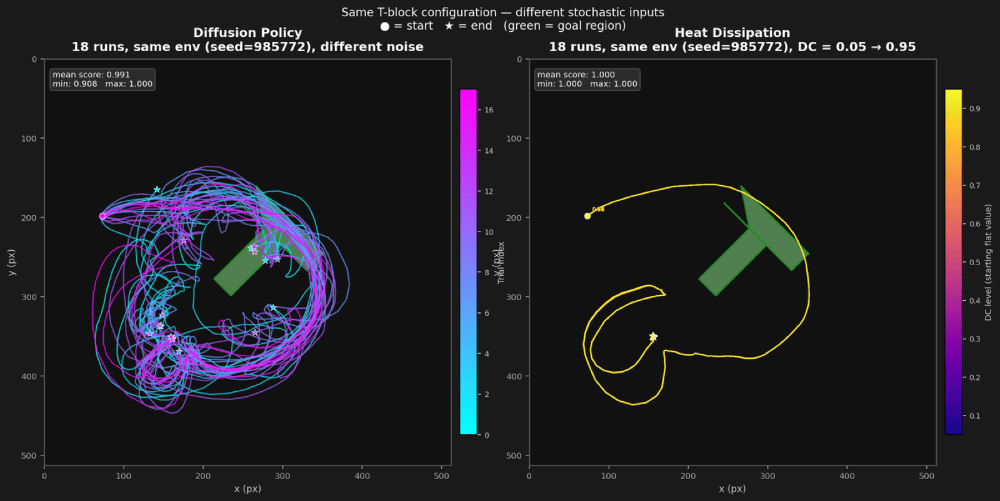
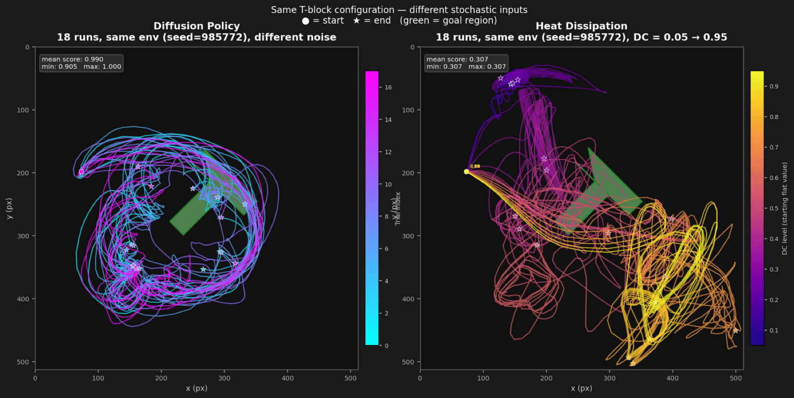
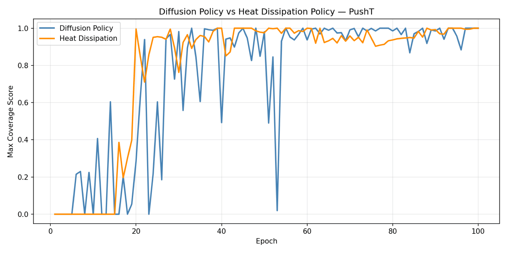
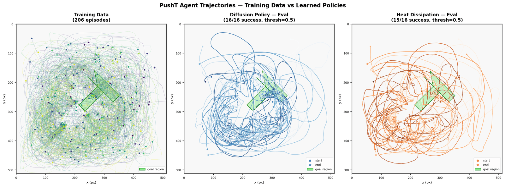
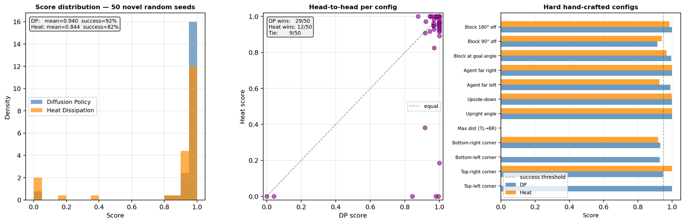
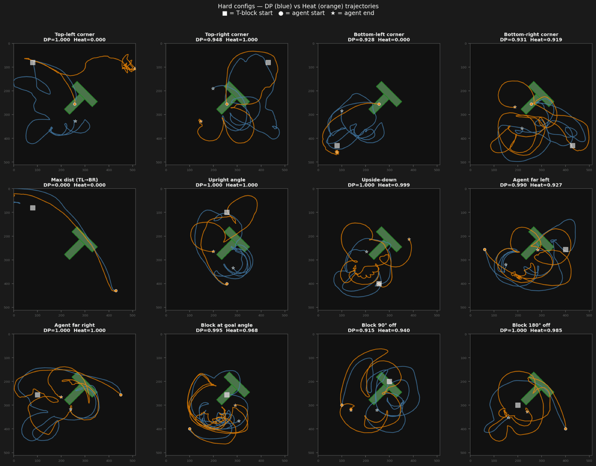

Standard diffusion corrupts data with i.i.d. Gaussian noise, destroying every frequency at the same rate. The Heat Dissipation Policy corrupts action trajectories with the heat equation instead — a physical process that erases fine detail first and coarse structure last, for free.
Standard diffusion corrupts a trajectory with i.i.d. Gaussian noise and learns to reverse it — every frequency destroyed at the same rate. The heat equation destroys structure differently: high frequencies die first, low frequencies survive longest. Applied to an action chunk instead of an image, that ordering is a coarse-to-fine motion plan for free — the rough trajectory shape is recoverable from very few reverse steps, fine corrections come last.

σ(t) is spaced as √(linspace(σmin², σmax², T)) rather than linearly. A linear schedule in σ is quadratic in the exponent, so it front-loads almost all the information destruction into the first few steps and wastes the rest of the schedule on an already-flat signal — the sqrt schedule destroys detail at a uniform rate across all T steps, the same reasoning that motivates cosine noise schedules in standard diffusion.
| Aspect | Diffusion Policy | Heat Dissipation Policy |
|---|---|---|
| Forward corruption | add i.i.d. Gaussian noise | blur with the heat kernel (FFT multiply) |
| Frequency treatment | every frequency corrupted equally | high frequencies die first, low frequencies survive longest |
| Network predicts | noise ε, then a0 = at − ε | clean signal â0 directly |
| Mass conservation | not applicable | exact — the zero-frequency (DC) term is untouched by construction |
| Structure at few steps | unstructured partial denoise | coarse-to-fine — a valid rough plan after very few reverse steps |
Eval score sits at 0.000 for all 100 epochs. The fix: randomize the DC component (the zero-frequency / mean offset) of each training action chunk, forcing the model to handle arbitrary offsets rather than the one it happened to see. With DC augmentation, the same architecture climbs to a best eval score of 0.857.
The reason: the heat kernel's attenuation factor exp(−2π²σ²|k|²) equals exactly 1 at k=0 for every σ. The DC term — the chunk's mean offset — is mathematically untouched by the forward process at any noise level. If every training chunk shares close to the same mean, the network is never asked to denoise a different one, and at test time an unfamiliar offset falls entirely outside what it ever learned to reconstruct.
Freeze one Push-T configuration and vary only the random seed for Diffusion Policy, or only the training-time DC offset (0.05 → 0.95) for Heat Dissipation. A robust policy's behavior on a fixed environment shouldn't hinge on either.




Once DC-augmented, Heat Dissipation is competitive with — if slightly behind — standard Diffusion Policy: mean score 0.912 vs. 0.982, and it outright wins on 6 of 16 seeds. One clear failure mode remains (seed 435829, below).
| Seed | DP score | Heat score | Winner |
|---|---|---|---|
| 985772 | 0.917 | 1.000 | Heat Dissipation |
| 305711 | 0.983 | 0.969 | Diffusion Policy |
| 435829 | 0.959 | 0.000 | Diffusion Policy |
| 117952 | 0.942 | 0.958 | Heat Dissipation |
| 963395 | 1.000 | 0.896 | Diffusion Policy |
| 152315 | 1.000 | 1.000 | Tie |
| 882371 | 1.000 | 0.913 | Diffusion Policy |
| 359783 | 0.999 | 0.970 | Diffusion Policy |
| 304137 | 0.998 | 1.000 | Heat Dissipation |
| 122579 | 0.961 | 0.984 | Heat Dissipation |
| 610581 | 0.974 | 1.000 | Heat Dissipation |
| 448242 | 1.000 | 0.985 | Diffusion Policy |
| 374564 | 1.000 | 1.000 | Tie |
| 735831 | 1.000 | 0.923 | Diffusion Policy |
| 736326 | 1.000 | 1.000 | Tie |
| 310744 | 0.974 | 0.995 | Heat Dissipation |
Two follow-up evaluations: a 50-seed random batch, and a hand-built set of hard cases — the T-block starting in corners, at extreme angles, in configurations the training distribution rarely produced.


If the heat kernel works as a forward process for 1D action trajectories, the same math applies to images and video frames.